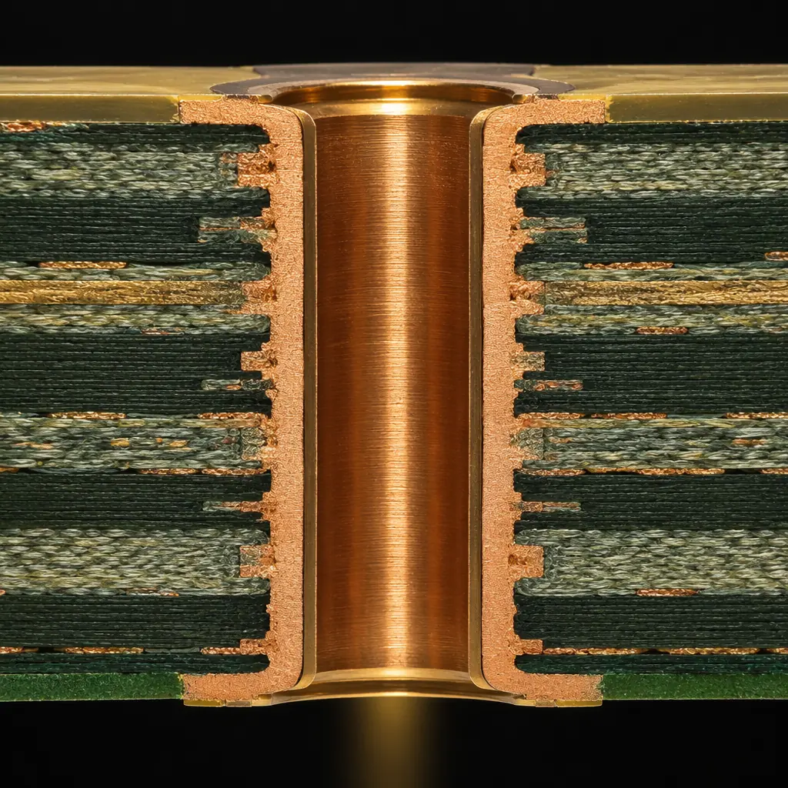
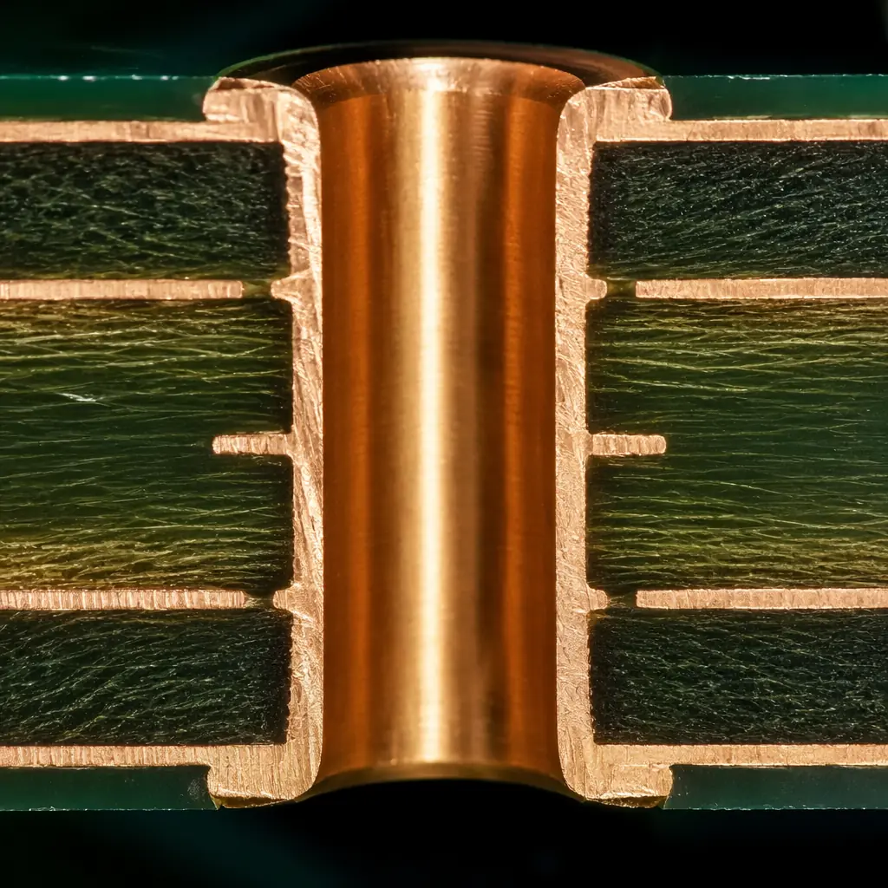
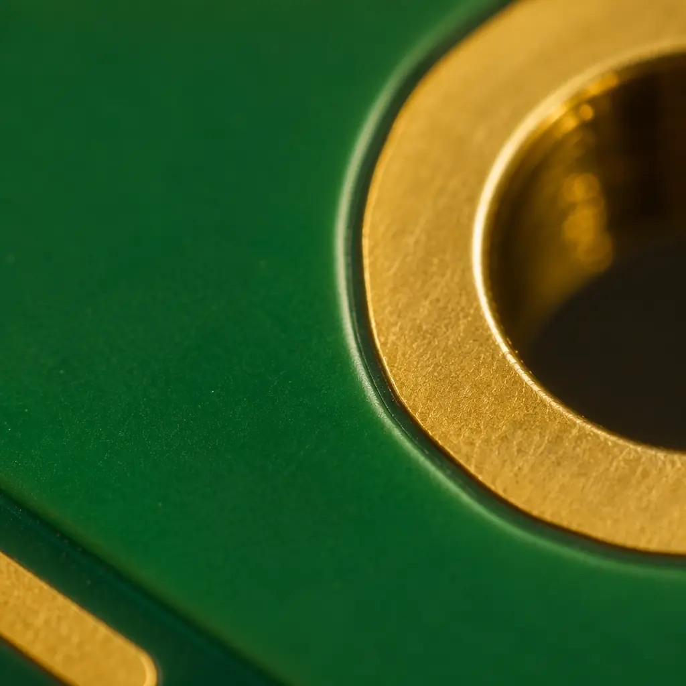

When a bare PCB arrives at your incoming inspection dock, the acceptance criteria you apply determine whether that board makes it to the assembly line — or gets flagged, quarantined, and returned to the supplier. For IPC-A-600 trained inspectors, the decision isn't subjective. It's a methodical evaluation against one of the most referenced standards in electronics manufacturing. If you're a procurement manager or QC engineer responsible for PCB quality, understanding what IPC-A-600 covers — and what it doesn't — is the difference between catching a latent defect at the bare-board stage and discovering it after components worth thousands of dollars have been soldered on.
IPC-A-600, officially titled Acceptability of Printed Boards, is the definitive visual inspection standard for bare PCBs. Published by the IPC — the global trade association for the electronics manufacturing industry — it defines exactly what constitutes an acceptable or rejectable condition on the external and internal surfaces of a fabricated printed circuit board. At Huaxing PCBA, every bare board passes through IPC-A-600 trained inspectors before it reaches our 8 SMT lines, and we've shipped boards inspected to this standard to 30+ countries. Here's what the standard covers, how the three acceptance classes differ, and how to read an inspection report with confidence.

What IPC-A-600 Actually Covers
IPC-A-600 is not a manufacturing specification — it's an acceptance standard. It tells you what a finished bare board should look like, not how to build it. The standard addresses both externally observable conditions and internal conditions revealed through microsection analysis. Its scope covers 11 categories of board characteristics, each with defined acceptance criteria for every observable feature:
Surface Conditions — The First Thing an Inspector Sees
Covers scratches, pits, nodules, dents, measling, crazing, weave exposure, and surface contamination. A scratch deeper than 25% of the conductor thickness is rejectable under Class 3 — but may be acceptable under Class 2 if it does not expose the base laminate or compromise conductor integrity. Surface defects are the most common cause of incoming QC rejection because they're visible without magnification and easy to catch during a proper inspection.
Conductor Width, Spacing, and Annular Ring — The Functional Parameters
Conductor width reduction from over-etching, spacing violations that risk electrical bridging, and annular ring breakout — where the drilled hole breaches the perimeter of its pad — are the most electrically consequential defects IPC-A-600 addresses. These parameters directly affect impedance, current-carrying capacity, and long-term reliability under thermal cycling. See our PCB testing methods guide for how electrical test complements visual inspection on these criteria.
Plated Through-Hole Quality — The Barrels That Carry Current
Covers copper plating thickness, voiding in the barrel wall, resin smear that blocks interlayer connections, nailheading (flaring of copper at the hole entrance), and inner-layer copper separation. Plated through-holes are the Achilles' heel of multilayer PCBs — a partially voided barrel may pass electrical test at room temperature only to fail open after 500 thermal cycles when the copper work-hardens and cracks. Microsection is the only definitive way to evaluate hole quality per IPC-A-600 criteria.
Solder Mask, Legend, and Surface Finish — The Protective Layers
Defines acceptable mask registration (how precisely the mask aligns to pad edges), mask blistering, peeling, or delamination, and coverage on conductor edges. For surface finishes — ENIG, HASL, OSP, immersion silver, immersion tin — the standard specifies acceptable appearance, uniform coverage, and the absence of skip plating, black pad, and solder icicles. Our ENIG vs HASL comparison covers how different surface finishes age and what degradation looks like under IPC-A-600 criteria.
The Three Acceptance Classes: What Changes Between Class 1, 2, and 3
IPC-A-600 defines three classes of acceptance, each representing a progressively tighter inspection window. The class you specify on your purchase order determines which defect severity is acceptable and which triggers rejection — and the differences between classes are not subtle.
| Inspection Parameter | Class 1 — General Electronic | Class 2 — Dedicated Service | Class 3 — High Reliability |
|---|---|---|---|
| Annular ring breakout (external) | 90° breakout allowed if conductor spacing maintained | 90° breakout allowed if min. lateral spacing maintained | No breakout permitted on external layers |
| Conductor width reduction | 20% of as-designed width | 20% of as-designed width | 20% of as-designed width, but no exposed base laminate |
| Hole registration (drill-to-pad alignment) | Breakout ≤90° | Breakout ≤90° with min. spacing | No breakout; pad must completely surround hole |
| Plating voids in barrel | ≤3 voids, none >10% of hole wall | ≤3 voids, none >5% of hole wall | ≤1 void, none >5% of hole wall area |
| Solder mask encroachment on pads | ≤125μm onto pad | ≤100μm onto pad | ≤75μm onto pad; no mask on BGA pads |
| Measling / crazing | Acceptable if electrical spacing not reduced | Not bridging >50% of conductor spacing | No measling permitted around plated holes; none that bridges >25% spacing |
| Surface scratches (solder mask) | No base material exposed | No conductors exposed | No scratches that penetrate >50% mask thickness |
Critical distinction: Class 2 is the default for commercial and industrial electronics — servers, telecom gear, consumer devices. Class 3 is mandatory for medical, aerospace, automotive safety, and defense applications where board failure threatens human safety or causes downtime measured in thousands of dollars per hour. Class 3 inspection takes 2–4× longer per board and rejects conditions that Class 2 would ship. Don't specify Class 3 unless your product genuinely requires it — our IPC Class 2 vs Class 3 comparison walks through the decision framework in detail.

Five Inspection Criteria Every QC Team Must Understand
IPC-A-600 is a 150+ page document. But five criteria account for the overwhelming majority of both board rejections and field failures. If your incoming QC process covers these thoroughly, you're catching the defects that actually matter:
Annular Ring — The Most Common Rejection in Multilayer Boards
Annular ring is the copper pad that remains after a hole is drilled through the center of a circular land. Minimum annular ring requirements exist to ensure the plated barrel has adequate mechanical and electrical connection to the internal and external copper layers. When drill wander causes breakout — the drilled hole cutting into the edge or entirely through the pad — the interlayer connection is compromised. IPC-A-600 Class 2 allows breakout up to 90° from the hole center provided minimum lateral spacing is maintained between the hole wall and adjacent conductors. Class 3 allows zero breakout on external layers. For internal layers, Class 3 requires a minimum 25μm annular ring even after accounting for layer-to-layer misregistration. This single criterion drives drill registration tolerance, layer-to-layer alignment, and the compensation applied during panel imaging — and getting it wrong is the fastest way to scrap an entire production panel.
Conductor Width and Spacing — Over-Etching's Hidden Damage
Conductors narrower than designed increase resistance, reduce current-carrying capacity, and create hot spots during operation. IPC-A-600 measures conductor width at the narrowest point along the trace, not an average. For fine-pitch designs where conductors are already at the manufacturer's minimum capability (75–100μm or 3–4 mil), over-etching of just 15μm pushes a marginal design into rejection territory. The standard also governs conductor spacing — the gap between adjacent traces where electrochemical migration and dendritic growth occur under humid, biased conditions. A single spacing violation on a high-voltage or high-impedance net can cause intermittent failures that elude in-circuit test. See our DFM tips guide for design rules that minimize over-etching risk.
Solder Mask Registration and Coverage — Protection That Must Be Perfect
Solder mask is not cosmetic — it prevents solder bridging during assembly and protects conductors from environmental damage. IPC-A-600 evaluates mask-to-pad registration (the clearance between the mask opening and the pad edge), mask encroachment onto pads (which reduces solderable area and can cause open joints on fine-pitch components), mask peeling or blistering (which traps flux and moisture), and mask coverage over conductor edges (which must be continuous to prevent corrosion). For BGA pads, mask encroachment of even 50μm is rejectable under Class 3 because the reduced pad area affects solder joint formation and X-ray inspection interpretation. Mask registration errors also telegraph deeper process problems — if the mask is misregistered, the outer-layer copper imaging was likely misregistered too.

Surface Plating and Finish Uniformity — Where Corrosion Begins
The surface finish is the exposed interface between your bare board and the solder joint — and IPC-A-600 treats it as a primary acceptance criterion. ENIG surfaces are evaluated for uniform gold color (dark or reddish patches indicate excessive nickel migration — the precursor to black pad syndrome), no skip plating, and no exposed nickel. HASL surfaces are checked for solder thickness uniformity, the absence of icicles or peaks exceeding 0.15mm protrusion, and complete coverage of all pads without exposed copper. Immersion silver and OSP finishes have their own criteria focused on tarnish resistance and coating uniformity. A surface finish defect caught at incoming QC saves the entire assembly cost — once components are soldered onto a defective finish, both the board and components are typically scrap. For the complete surface finish comparison across IPC-A-600 criteria, see our ENIG vs HASL surface finish guide.
Hole Registration and Inner-Layer Alignment — What Microsection Reveals
Hole registration — how accurately the drilled hole aligns with the internal and external pad patterns — cannot be fully verified by visual inspection of the board surface. Microsection analysis is required. IPC-A-600 specifies that a microsection coupon from the production panel must show inner-layer pads properly centered around the plated hole, with minimum annular ring requirements met at every layer. Layer-to-layer misregistration exceeding 100μm is rejectable under Class 3. This is especially critical for high-layer-count boards (16–32 layers) where accumulated registration errors across the stackup can shift inner-layer pads entirely outside the drilled hole — an open circuit that passes flying-probe test but fails after thermal cycling when the via barrel separates from the pad. At Huaxing, microsection is standard documentation for every ≥6-layer order.
Procurement takeaway: When you receive an IPC-A-600 inspection report with zero defects, the most valuable information is the inspection magnification, lighting conditions, and sample size — not the pass/fail result. An inspection at 1.75× magnification on 3 boards from a 500-board lot is not the same as a 5× inspection on 80 boards per AQL sampling plans. Ask for the inspection parameters, not just the conclusion. Our PCB incoming quality inspection guide covers how to set up your own IQC process to IPC-A-600 standards.
How to Read an IPC-A-600 Inspection Report
An IPC-A-600-compliant inspection report should include more than a "pass" or "fail." Here's what a properly documented report contains:
Lot Identification and Sampling Plan
The report must identify the lot number, PO number, part number and revision, total lot quantity, sample size inspected, and the AQL level used. Without this, the inspection result cannot be traced to a specific production batch. A report that says "100 boards inspected" without stating the lot size is ambiguous — was that 100% inspection of a 100-board lot, or a 0.4% sample of 25,000 boards?
Inspection Conditions — Magnification, Lighting, and Method
IPC-A-600 specifies inspection at 1.75× magnification for general inspection, with higher magnifications (up to 40×) permitted for referee verification of ambiguous conditions. The report should state the magnification used, the lighting intensity at the inspection surface (≥1,000 lux is standard), and whether AOI was used as a pre-screen before visual verification. An AOI-only pass with no human visual verification is not an IPC-A-600 inspection — the standard requires trained human judgment for conditions that AOI algorithms cannot classify.
Defect Classification with IPC-A-600 Reference Numbers
Every rejectable condition should reference the specific IPC-A-600 section (e.g., "2.8.3 — annular ring breakout on external layer, 3 boards affected, pads U12-4, U12-7"). Generic descriptions like "drill problem" or "mask issue" without section references indicate the inspector may not be IPC-A-600 trained — they're describing what they see rather than evaluating against the standard.
Disposition and Corrective Action
A complete report states the lot disposition (accept, reject, or accept after rework), the rework method if applicable, and the corrective action to prevent recurrence. A report with no disposition is incomplete — it documents the problem without solving it.
IPC-A-600 vs IPC-6012: Why Both Standards Matter for Incoming QC
One of the most persistent misconceptions in PCB procurement is that IPC-A-600 and IPC-6012 are interchangeable. They are complementary — and you need both to fully verify bare board quality:
| Attribute | IPC-A-600 | IPC-6012 |
|---|---|---|
| Type | Acceptance standard (visual/visual-aided inspection) | Performance specification (qualification and conformance) |
| What it defines | What is acceptable — the pass/fail boundary for visual conditions | How to qualify a board — material, process, and performance requirements |
| Inspection method | Human visual inspection with magnification | Test-based: thermal stress, solderability, microsection analysis, electrical test |
| When used | Incoming QC, outgoing QC, process control inspection | New supplier qualification, periodic lot conformance testing |
| Class 3 example | No annular ring breakout on external layers | Minimum 20μm copper in barrel, T260/T288 thermal stress test passed |
In practice, a PCB supplier should be able to demonstrate IPC-6012 conformance (test data proving the board meets performance requirements) and IPC-A-600 acceptance (visual inspection proving the delivered boards are free of workmanship defects). A factory that provides only one or the other has a gap in their quality assurance process. For the broader context of PCB quality standards, read our certifications and compliance guide which covers how IPC standards integrate with ISO 9001, IATF 16949, and UL requirements.
How Huaxing PCBA Applies IPC-A-600 to Every Production Lot
IPC-A-600 is not a standard you apply selectively — it's embedded in the production workflow or it's not applied at all. Here's how inspection happens at our Shenzhen facility:
Dedicated IPC-A-600 Trained Inspectors — Not Line Operators Pulled From Production
Our incoming and outgoing QC teams are IPC-A-600 certified inspectors whose only role is visual inspection against the standard. They are not production operators multitasking between inspection and line work. This matters because inspector fatigue and divided attention are the two leading causes of missed defects. A full-time inspector examining 200 boards per shift maintains detection consistency that a rotating operator cannot match.
AOI Pre-Screening + Human Verification — Not One or the Other
Automated Optical Inspection (AOI) screens 100% of boards for dimensional deviations, surface defects, and pattern alignment issues. But IPC-A-600 requires human judgment for conditions like discoloration, contamination, and subtle mask defects that AOI algorithms flag as "borderline." Every AOI-flagged board goes to a human inspector for final disposition. Boards that pass AOI still receive AQL sample-based visual inspection — no AOI system catches everything. Our PCB testing methods overview details the full test protocol from bare board through assembled product.
Documentation Package With Every Shipment
Every export shipment includes an IPC-A-600 inspection report documenting the lot inspected, sample size, magnification used, defects found and classified, and lot disposition. For multilayer boards (≥6 layers), the package also includes microsection images with inner-layer registration measurements. Documentation isn't a value-add service — it's standard OQC at a competent PCB manufacturer.
Summary: IPC-A-600 Is Your Quality Language With Your PCB Supplier
IPC-A-600 does something more important than define defect criteria — it provides a shared vocabulary between buyer and manufacturer. When your purchase order references "IPC-A-600 Class 2, inspection to AQL 1.0 major / 2.5 minor," both parties know exactly what is acceptable and what is not. The standard replaces subjective judgment with objective criteria, and it gives your incoming QC team an enforceable reference when rejecting nonconforming material.
The five criteria that matter most — annular ring, conductor width, solder mask, surface finish, and hole registration — should form the backbone of your incoming inspection checklist. Train your IQC team on the specific IPC-A-600 sections relevant to your product class, require inspection reports with magnification and sample size disclosed, and verify that your supplier's inspectors are certified to the standard, not just familiar with it.
At Huaxing PCBA, IPC-A-600 inspection is integrated into every production lot — from incoming quality control through certified OQC before packaging. Our facility runs 8 SMT lines with IPC-A-600 trained inspectors, AOI on every board, and full documentation packages for export shipments to 30+ countries. Contact our quality team to discuss your specific acceptance criteria, or read our Class 2 vs Class 3 guide to determine which acceptance level your product requires.